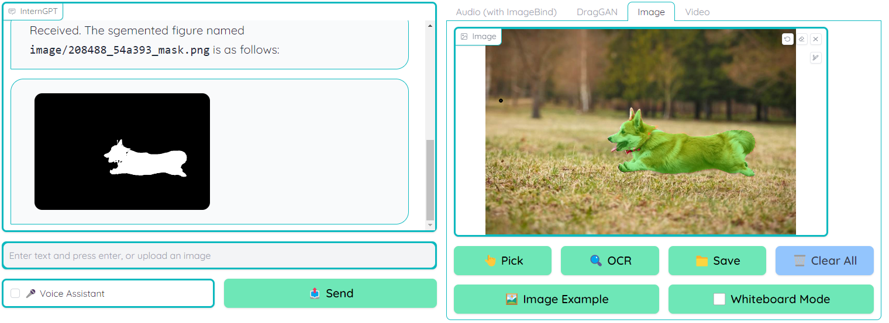
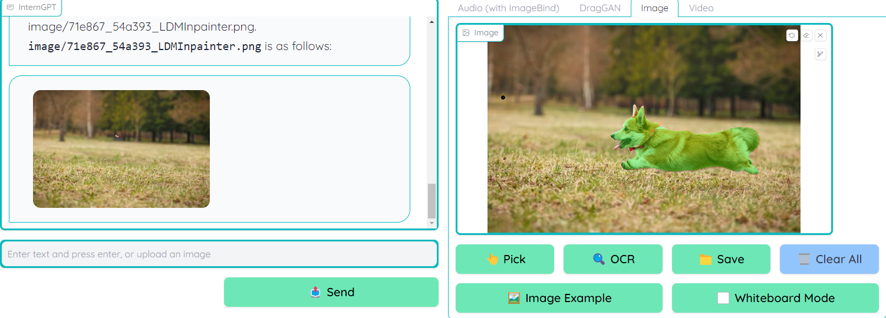

Background
InternGPT is a pointing-language-driven visual interactive system which allows you to send images as input for GPT model. There are some basic functions should be supported by this project including click, drag and draw.
Investigation
A. Click
Draw a line to point some image objects in the photo
Click the pick button to select the object After processing, you are able to see the output mask image in the message box, supprsingly, the system can bound the image with high accuracy 
Send some commands (only natural language is required) to the message prompt and see the result
e.g. remove the dog in the image

Evaluation
Some unwanted details are still remained in the output image, but it can be improved in the further model.
B. Drag
- Clone and Installation
git clone https://github.com/Zeqiang-Lai/DragGAN.git
cd DragGAN
conda create -n draggan python=3.7
conda activate draggan
pip install -r requirements.txt
- Launch the server
# if you have a Nvidia GPU
python gradio_app.py
# if you use m1/m2 mac
python gradio_app.py --device mps
# otherwise
python gradio_app.py --device cpu
Result
Unfortunately, I am not able to drag the image in the system due to the lack of GPU. Eventhough I have tried to use the demo website provided by official develop team, it always gives me errors after running the model.
DraGAN is still in the development stage, it is not stable enough to use in the production environment. So, I will wait for a stable version to test this function.